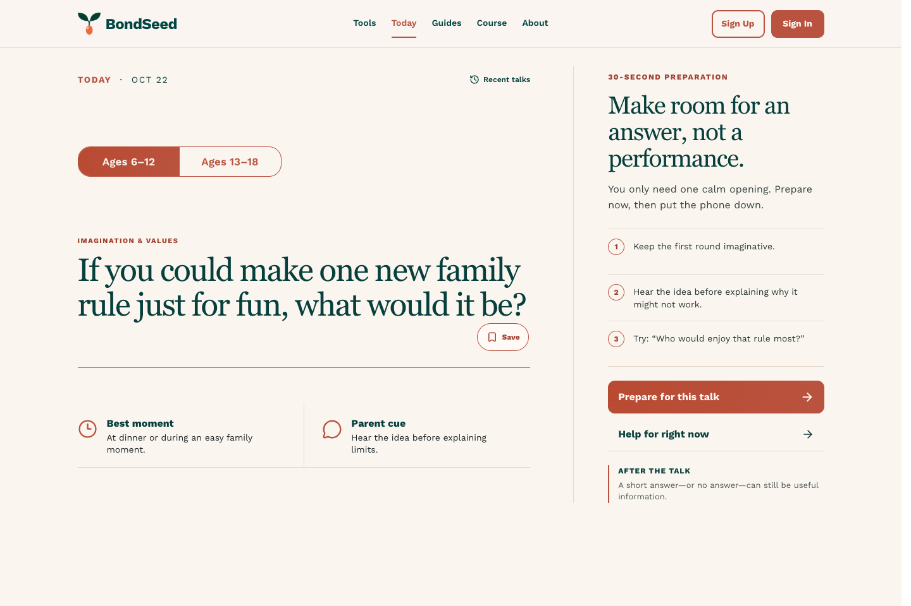

BondSeed 背后的人
你好，我叫 McFly Shi。
他在长大，我也在学习成为更好的父亲。
你好，我叫 McFly Shi，是 BondSeed 的创办人，也是一名普通的父亲。我不是育儿专家，也没有心理学方面的专业资质。在这里，我想分享的，是十八年来陪伴儿子成长的亲身经历，以及一路走来的体会与思考。
从他出生、牙牙学语，到运动、学习，再到如今去异地上大学，我曾经熟悉的日常，渐渐变成了远方的牵挂。一年里能陪在彼此身边的日子少了，也让我有了更多时间，回望我们一起走过的路。
这十八年，有快乐，也有迷茫、困扰和不知所措。我犯过错，也常常需要重新学习如何做父亲。如今，看着儿子成长为一个善良、独立的人，我感到欣慰，也心怀感激。在陪伴他的过程中，我同样从他身上学到了很多。他在长大，我也在学习成为更好的父亲。
BondSeed 的起点，藏在一件很小的日常里。
儿子上小学时，每天接他放学，我都希望能和他聊得开心一些，却时常不知道该如何开口。后来，我开始把想和他聊的话题写在一张张小卡片上。这些卡片寄托着一个简单的愿望：多了解他的世界，也让我们有更多愿意与彼此分享的时刻。
如今，有了更多可以自己支配的时间，我想把这些卡片，以及多年来的经历和思考，慢慢整理出来，分享给同样在寻找交流方式的家长。这便是我创建 BondSeed 的初衷。
网站里的内容以我的个人经验为基础。我也会参考相关书籍和文献，结合自己的经历，整理出值得尝试的话题与方法。每个孩子、每个家庭都有自己的样子；我希望这些分享能给你一些启发，帮助你找到适合自己和孩子的相处方式。
养育孩子从来不是一件轻松的事。谢谢你来到这里，愿意为与孩子的关系多花一点心思。欢迎你在这段旅程中与我同行。我会继续用心打磨 BondSeed，也愿我们在忙碌与困惑之间，都能多一些倾听与理解，和孩子一起，看见成长路上的美好风景。
— McFly Shi · BondSeed 创办人